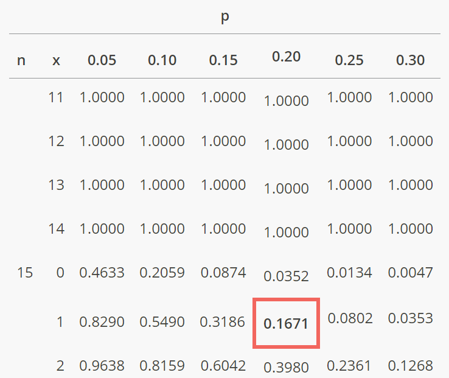
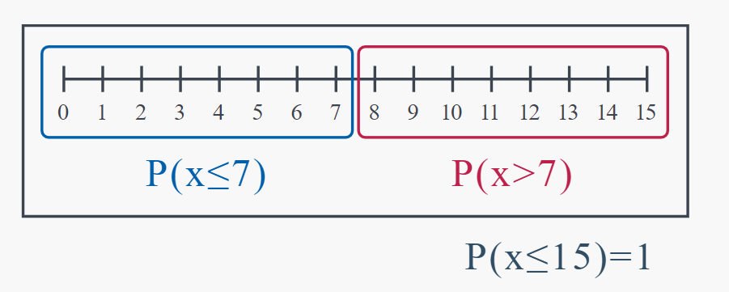
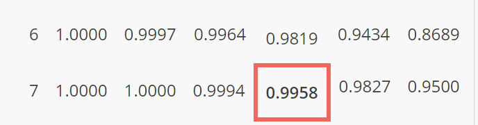

Chapter 2 The Binomial Distribution
2.1 The Probability Mass Function
2.1.1 Example
We previously looked at an example in which three fans were randomly selected at a football game in which Bauchi State University, Gadau (BASUG) is playing Abubakar Tafawa Balewa University (ATBU). Each fan was identified as either a BASUG fan (B) or an ATBU fan (A), yielding the following sample space: \[ S = \{BBB, BBA, BAB, ABB, AAB, ABA, BAA, AAA\} \]
We let \(X\) equal the number of BASUG fans selected. The possible values of \(X\) were, therefore, either 0, 1, 2, or 3. Now, we could find probabilities of individual events, \(P(BBB)\) or \(P(BBA)\), for example. Alternatively, we could find \(P(X=x)\), the probability that \(X\) takes on a particular value \(x\). Let’s do that (again)! This time though we will be less interested in obtaining the actual probabilities as we will be in looking for a pattern in our calculations so that we can derive a formula for calculating similar probabilities.
To solve the problem again, we need to recalculate the probabilities based on the provided expression:
\[ P(X = 0) = P(NNN) = 0.2 \times 0.2 \times 0.2 \]
\[ = 1 \times (0.8)^0 \times (0.2)^3 \]
Given the expression, we can see that \(P(X = 0)\) is simply equal to \((0.8)^0 \times (0.2)^3\).
\[ P(X = 0) = (0.8)^0 \times (0.2)^3 \] \[ = 1 \times 0.008 \] \[ = 0.008 \]
Similarly, for \(P(X = 1)\), \(P(X = 2)\), and \(P(X = 3)\), we have:
\[ P(X = 1) = P(NBB) + P(BNB) + P(BBN) \] \[ = 3 \times (0.8)^1 \times (0.2)^2 \] \[ = 3 \times 0.8 \times 0.04 \] \[ = 0.24 \]
\[ P(X = 2) = P(BBN) + P(BNB) + P(NBB) \] \[ = 3 \times (0.8)^2 \times (0.2)^1 \] \[ = 3 \times 0.64 \times 0.2 \] \[ = 0.384 \]
\[ P(X = 3) = P(BBB) \] \[ = (0.8)^3 \times (0.2)^0 \] \[ = 0.512 \]
Therefore, the updated probability mass function \(P(X = x)\) is:
\[ P(X = 0) = 0.008 \] \[ P(X = 1) = 0.24 \] \[ P(X = 2) = 0.384 \] \[ P(X = 3) = 0.512 \]
Do you see a pattern in our calculations? It seems that, in each case, we multiply the number of ways of obtaining \(x\) BASUG fans first by the probability of \(x\) BASUG fans \((0.8)^x\) and then by the probability of ATBU fans \((0.2)^{3-x}\).
This example lends itself to the creation of a general formula for the probability mass function of a binomial random variable X.
2.2 Binomial Random Variable
The probability mass function of a binomial random variable \(X\) is:
\[f(x)=\dbinom{n}{x} p^x (1-p)^{n-x}\]
We denote the binomial distribution as \(b(n,p)\). That is, we say:
\[X\sim b(n, p)\]
where the tilde \((\sim)\) is read “as distributed as,” and \(n\) and \(p\) are called parameters of the distribution.
2.3 Binomial Random Variable
A discrete random variable X is a binomial random variable if:
- An experiment, or trial, is performed in exactly the same way \(n\) times.
- Each of the \(n\) trials has only two possible outcomes. One of the outcomes is called a “success,” while the other is called a “failure.” Such a trial is called a Bernoulli trial.
- The \(n\) trials are independent.
- The probability of success, denoted \(p\), is the same for each trial. The probability of failure is \(q=1-p\).
- The random variable X = the number of successes in the \(n\) trials.
2.3.1 Example
A coin is weighted in such a way so that there is a 70% chance of getting a head on any particular toss. Toss the coin, in exactly the same way, 100 times. Let X equal the number of heads tossed. Is X a binomial random variable?
Answer Yes, X is a binomial random variable, because:
- The coin is tossed in exactly the same way 100 times.
- Each toss results in either a head (success) or a tail (failure).
- One toss doesn’t affect the outcome of another toss. The trials are independent.
- The probability of getting a head is 0.70 for each toss of the coin.
- X equals the number of heads (successes).
2.3.2 Example
A college administrator randomly samples students until he finds four that have volunteered to work for a local organization. Let X equal the number of students sampled. Is X a binomial random variable?
Answer No, X is not a binomial random variable, because the number of trials was not fixed in advance, and \(n\) does not equal the number of volunteers in the sample.
2.4 Cumulative Binomial Probabilities
2.4.1 Example
By some estimates, twenty-percent (20%) of Americans have no health insurance. Randomly sample \(n=15\) Americans. Let X denote the number in the sample with no health insurance. a) What is the probability that exactly 3 of the 15 sampled have no health insurance?
Solution
To solve this problem, we’ll use the binomial probability formula:
\[ P(X = k) = \binom{n}{k} \times p^k \times (1 - p)^{n - k} \]
where: - \(n\) is the total number of trials (sample size) - \(k\) is the number of successes (number of Americans with no health insurance) - \(p\) is the probability of success (proportion of Americans with no health insurance) - \((1 - p)\) is the probability of failure (proportion of Americans with health insurance)
Given: - \(n = 15\) - \(k = 3\) - \(p = 0.20\) (probability of an American having no health insurance)
Substituting these values into the formula:
\[ P(X = 3) = \binom{15}{3} \times 0.20^3 \times 0.80^{15 - 3} \]
Using the binomial coefficient formula:
\[ \binom{15}{3} = \frac{15!}{3!(15-3)!} = \frac{15 \times 14 \times 13}{3 \times 2 \times 1} = 455 \]
Now, plugging in the values:
\[ P(X = 3) = 455 \times 0.20^3 \times 0.80^{12} \]
\[ P(X = 3) = 455 \times 0.008 \times 0.0687 \]
\[ P(X = 3) = 2.3736 \]
Therefore, the probability that exactly 3 of the 15 sampled Americans have no health insurance is approximately \(2.3736\).
- What is the probability that at most one of those sampled has no health insurance?
Solution To find the probability that at most one of those sampled has no health insurance, we need to find the probabilities for \(X = 0\) and \(X = 1\), and then sum them up.
Given: - \(n = 15\) - \(p = 0.20\)
Using the binomial probability formula:
\[ P(X = k) = \binom{n}{k} \times p^k \times (1 - p)^{n - k} \]
where: - \(n\) is the total number of trials (sample size) - \(k\) is the number of successes (number of Americans with no health insurance) - \(p\) is the probability of success (proportion of Americans with no health insurance) - \((1 - p)\) is the probability of failure (proportion of Americans with health insurance)
For \(X = 0\): \[ P(X = 0) = \binom{15}{0} \times 0.20^0 \times 0.80^{15} \] \[ P(X = 0) = 1 \times 1 \times 0.80^{15} \] \[ P(X = 0) \approx 0.0352 \]
For \(X = 1\): \[ P(X = 1) = \binom{15}{1} \times 0.20^1 \times 0.80^{14} \] \[ P(X = 1) = 15 \times 0.20 \times 0.80^{14} \] \[ P(X = 1) \approx 0.1319 \]
Now, let’s sum up these probabilities to find \(P(X \leq 1)\):
\[ P(X \leq 1) = P(X = 0) + P(X = 1) \] \[ P(X \leq 1) = 0.0352 + 0.1319 \] \[ P(X \leq 1) = 0.167 \]
Therefore, the probability that at most one of those sampled has no health insurance is approximately \(0.167\).
- What is the probability that more than seven have no health insurance?
Solution
To find the probability that more than seven people have no health insurance, we need to find the probabilities for \(X > 7\).
Given:
- \(n = 15\)
- \(p = 0.20\)
Using the binomial probability formula:
\[ P(X > 7) = 1 - P(X \leq 7) \]
Now, let’s calculate \(P(X \leq 7)\) and subtract it from 1 to find \(P(X > 7)\).
We’ll sum up the probabilities for \(X = 0\) through \(X = 7\) to find \(P(X \leq 7)\), and then subtract that value from 1.
Let’s calculate the probabilities for \(X = 0\) through \(X = 7\):
For \(X = 0\): \[ P(X = 0) = \binom{15}{0} \times 0.20^0 \times 0.80^{15} \] \[ P(X = 0) \approx 0.0352 \]
For \(X = 1\): \[ P(X = 1) = \binom{15}{1} \times 0.20^1 \times 0.80^{14} \] \[ P(X = 1) \approx 0.1318 \]
For \(X = 2\): \[ P(X = 2) = \binom{15}{2} \times 0.20^2 \times 0.80^{13} \] \[ P(X = 2) \approx 0.2333 \]
For \(X = 3\): \[ P(X = 3) = \binom{15}{3} \times 0.20^3 \times 0.80^{12} \] \[ P(X = 3) \approx 0.2668 \]
For \(X = 4\): \[ P(X = 4) = \binom{15}{4} \times 0.20^4 \times 0.80^{11} \] \[ P(X = 4) \approx 0.2001 \]
For \(X = 5\): \[ P(X = 5) = \binom{15}{5} \times 0.20^5 \times 0.80^{10} \] \[ P(X = 5) \approx 0.1001 \]
For \(X = 6\): \[ P(X = 6) = \binom{15}{6} \times 0.20^6 \times 0.80^9 \] \[ P(X = 6) \approx 0.0369 \]
For \(X = 7\): \[ P(X = 7) = \binom{15}{7} \times 0.20^7 \times 0.80^8 \] \[ P(X = 7) \approx 0.0107 \]
Now, let’s sum up these probabilities to find \(P(X \leq 7)\):
\[ P(X \leq 7) = P(X = 0) + P(X = 1) + P(X = 2) + P(X = 3) + P(X = 4) + P(X = 5) + P(X = 6) + P(X = 7) \]
\[ P(X \leq 7) \approx 0.9149 \]
Therefore, the probability that more than seven people have no health insurance is:
\[ P(X > 7) = 1 - P(X \leq 7) \] \[ P(X > 7) = 1 - 0.9149 \] \[ P(X > 7) \approx 0.0851 \]
So, the probability that more than seven of the sampled individuals have no health insurance is approximately \(0.0851\).
2.5 Cumulative Probability Distributions
2.5.1 Example
Again, by some estimates, twenty-percent (20%) of Americans have no health insurance. Randomly sample \(n=15\) Americans. Let \(X\) denote the number in the sample with no health insurance. Use the cumulative binomial probability table in the back of your book to find the probability that at most 1 of the 15 sampled has no health insurance.
Solution
To find the probability that at most 1 out of the 15 sampled individuals has no health insurance, we can use the cumulative binomial probability table. Given that the probability of an American having no health insurance is 20%, we have \(p=0.20\).
From the cumulative binomial probability table, we look for the probability of \(X \le1\) for \(n=15\) and \(p=0.20\). This represents the probability that at most 1 out of the 15 sampled individuals has no health insurance.

Using the cumulative binomial probability table, we find: \[P(X\le1 =0.1671)\]
Therefore, the probability that at most 1 out of the 15 sampled individuals has no health insurance is approximately 0.1671.
b.) What is the probability that more than 7 have no health insurance?
Solution
As we determined previously, we can calculate \(P(X>7)\) by finding \(P(X\le7)\) and subtracting it from 1:  The good news is that the cumulative binomial probability table makes it easy to determine \(P(X\le7)\) To find \(P(X\le7)\) using the binomial table, we:
- Find \(n=15\) in the first column on the left.
- Find the column containing \(p=0.20\).
- Find the 7 in the second column on the left, since we want to find \(F(7)=P(X\le 7)\).
Now, all we need to do is read the probability value where the \(p=0.20\) column and the \((n=15, x=7)\) ) row intersect. What do you get?

The cumulative binomial probability table tells us that \(P(X\le 7)=0.9958\). Therefore:
\[P(X>7) = 1 − 0.9958 = 0.0042\]
That is, the probability that more than 7 in a random sample of 15 would have no health insurance is 0.0042.